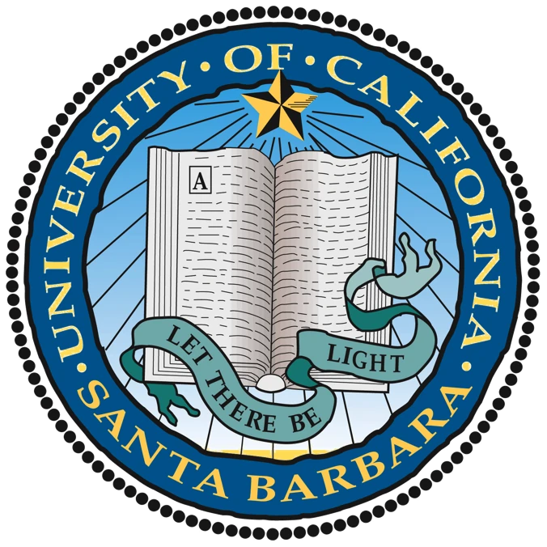

Education
I am a Master of Environmental Data Science student at the Bren School of Environmental Science & Management at the University of California-Santa Barbara (UCSB).
I graduated from UCSB in 2022 with a B.S. in Statistics and Data Science, B.A. in Economics, and minors in Iranian Studies and Translation Studies. I started my academic career in 2018 as a Judith Stapelmann Scholar and was awarded the Jeremy D. Friedman Memorial Award in June 2022 for my avid involvement on campus.
I studied abroad at the University of Edinburgh during Fall 2021 which solidified my interest in pursuing a higher degree in data science.
I have further outlined my educational history below! Feel free to read on.
Master of Environmental Data Science
Class of 2023
Awards: Promise Fellowship
Highlighted Coursework: Databases & Data Management, Machine Learning, Geospatial Analysis & Remote Sensing, Data Visualization & Communication (Completed by June 2023)
Bren School of Environmental Science & Management – University of California, Santa Barbara (UCSB)

Bachelor of Science (B.S.) in Statistics and Data Science
Bachelor of Arts (B.A) in Economics
Minor in Translation Studies | Minor in Iranian Studies
Honors Distinction, Class of 2022
Awards: Judith Stapelmann Scholar (2018-2022) | Jeremy D. Friedman Honorary Memorial Award (2022)
University of California, Santa Barbara (UCSB)
Study Abroad (2021)
Highlighted Coursework: Data Science in Ecology and Environmental Science
University of Edinburgh, Scotland